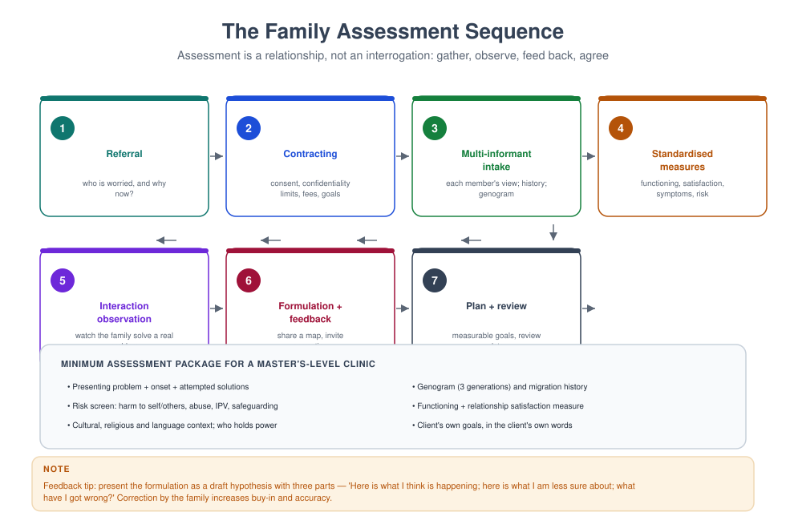
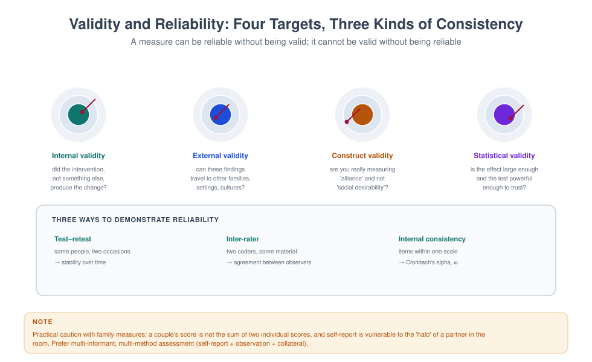
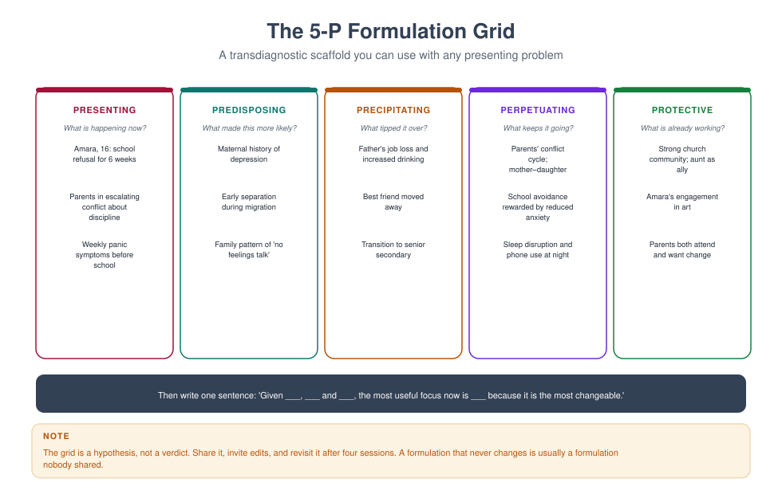

MFT 707 — Assessment and Diagnosis in Family Therapy
Course leader's summary. You will learn to gather multi-informant data, use standardised measures properly, formulate relationally, use diagnosis without being used by it, and communicate all of it to a family in words they can use. The course culminates in a full assessment report of publishable quality.
How to use this book
Assessment is the phase of therapy where the most harm and the most help can be done. Work through the weeks in order: the sequence matters, because each week's skill depends on the previous one. The final assignment is a complete assessment report — the same document type you will write for courts, schools and psychiatrists for the rest of your career.
1. Course description
Family assessment answers four questions: What is happening? How does it work? What maintains it? What would help? Diagnosis answers a fifth: Does this presentation meet criteria for a recognised disorder? Both matter, and they are not the same activity.
The course teaches the multi-informant, multi-method standard: self-report, collateral report, observation of interaction, standardised measures, records, and the family's own account — integrated in a formulation that is shared, tested and revised.
2. Learning outcomes
| # | Outcome | Assessed |
|---|---|---|
| LO1 | Plan and conduct a multi-informant family assessment | Observed assessment |
| LO2 | Administer, score and interpret at least four standardised measures | Report |
| LO3 | Use DSM-5/ICD-11 criteria appropriately, including their limits | Exam |
| LO4 | Produce a 5-P formulation with relational hypotheses and a risk screen | Report |
| LO5 | Identify medical, substance-related and cultural rule-outs | Exam |
| LO6 | Give assessment feedback to a family in accessible language | Skills assessment |
| LO7 | Write a report that is accurate, defensible and free of jargon | Report |
3. Assessment
| Component | Weight | Due |
|---|---|---|
| Measure administration and scoring (portfolio) | 20% | Week 7 |
| Observed assessment interview (30 min) | 25% | Week 11 |
| Full assessment report (3,000 words + appendices) | 40% | Week 15 |
| Examination | 15% | Week 16 |
4. The fifteen-week plan
| Week | Topic | Practical |
|---|---|---|
| 1 | Purposes of assessment: clinical, legal, institutional | Map the purposes in a case |
| 2 | The multi-informant principle; who to see and in what order | Design an assessment plan |
| 3 | History taking: development, family, medical, psychiatric, substance | Structured history interview |
| 4 | Interaction observation: what to look for and how to record | Live observation coding |
| 5 | Standardised measures I: relationship and family functioning | Score and interpret |
| 6 | Standardised measures II: symptoms, risk, children | Score and interpret |
| 7 | Measure portfolio due; psychometrics in practice | Peer review of portfolios |
| 8 | Diagnosis I: DSM-5 and ICD-11 — structure, use, limits | Criteria exercise |
| 9 | Diagnosis II: differential diagnosis and comorbidity | Case differentials |
| 10 | Medical, neurological and substance rule-outs | Referral-writing lab |
| 11 | Observed assessment interview | Assessment and feedback |
| 12 | Relational and systemic diagnosis: beyond the individual | Formulation workshop |
| 13 | Cultural formulation and bias in assessment | Cultural formulation exercise |
| 14 | Feedback, report-writing and shared decision-making | Report clinic |
| 15 | Integration: assessment that changes treatment | Case presentations |
Week 1 — Purposes of assessment
Assessment is never neutral. Ask who wants it and what they will do with it.
| Purpose | Who commissions | What they need |
|---|---|---|
| Clinical | The family | Understanding, direction, relief |
| Institutional | School, employer, agency | A defensible opinion and a recommendation |
| Legal | Court, solicitor, child protection | Facts, opinion within expertise, documentation |
| Research | Investigator | Standardised, comparable data |
| Self-understanding | The family | Narrative coherence |
The trap of multiple purposes. A family may come for help and be sent by a court. The therapist must be explicit about which hat they are wearing, because the duties differ — a clinical assessment prioritises the client's interests; a forensic assessment prioritises accuracy for the court and is not confidential in the same way.
Week 2 — The multi-informant principle
Rule. Never rely on one informant for a relational question. Mothers, fathers, children and teachers systematically disagree, and the disagreement is clinically informative.
A workable order of contact.
- Referrer (5–10 minutes by phone): what is the concern, what has been tried, is there risk?
- Whole family (60–90 minutes): joining, each person's view, interaction observation, contract.
- Subgroups as indicated: parents alone, each child, each partner separately (always screen IPV separately).
- Collateral with consent: school, GP, previous therapist.
- Measures completed between sessions.
- Feedback session: share the formulation, invite correction.
Who is missing? Fathers, paternal relatives, non-resident children, step-parents, grandparents who co-parent, and the person the family has decided not to discuss. Ask: "Who else is part of this family who is not here? Who would disagree with what has been said today?"

Week 3 — History taking
A structured history prevents the two classic errors: never asking, and asking everything.
Domains (45 minutes is enough if you are organised).
| Domain | Key questions |
|---|---|
| Presenting problem | Onset, course, severity, triggers, attempted solutions, previous treatment |
| Developmental | Pregnancy, birth, milestones, illnesses, separations, schooling |
| Family of origin | Genogram (3 generations), roles, losses, secrets, migration, violence, mental illness |
| Current family | Household composition, rules, routines, roles, money, division of labour, sexuality |
| Medical | Chronic illness, medication, sleep, head injury, neurological symptoms |
| Psychiatric | Previous diagnoses, hospitalisations, self-harm, suicide attempts, treatment response |
| Substance use | Alcohol, tobacco, cannabis, prescription, other; quantity, frequency, consequences |
| Social | Work, school, faith community, friends, housing, legal issues, finances |
| Risk | Harm to self/others, abuse, neglect, IPV, safeguarding |
| Strengths | What has kept this family going? Who helps? What works? |
The strengths column is not decoration. Families referred for assessment have usually been described in deficit terms for years. A careful strengths inventory changes the emotional tone of everything that follows and predicts engagement.
Week 4 — Interaction observation
You do not have to rely on what families say about themselves; you can watch them.
Four standard tasks.
- The problem discussion (10 minutes). "Talk to each other about the problem for ten minutes. I will not interrupt." Observe: who speaks, who is interrupted, who looks at whom, who is silent, how it ends.
- The planning task (5 minutes). "Agree on one change you will make this week." Observe: negotiation, hierarchy, coalition, flexibility.
- The positive reminiscence (5 minutes). "Tell each other about a good day you had together." Observe: affection, repair capacity, humour.
- The child-focused task. "Decide together how to respond to the next tantrum." Observe: who decides, whether the child is consulted, whether the parents support each other.
What to record (behavioural, not judgemental).
| Record | Not |
|---|---|
| "Father interrupted mother 7 times in 10 minutes; she stopped speaking after minute 6." | "Father was dominant." |
| "Daughter looked at mother before answering each question." | "Daughter is enmeshed." |
| "Parents agreed on the plan in 90 seconds; the child's objection was not addressed." | "Weak parenting." |
The five-minute structural map. Draw the seating, the direction of speech, and the coalitions you observed. It will be more useful than a page of adjectives.
Week 5 — Standardised measures I: relationship and family functioning
Why measure. To obtain a baseline, compare informants, track change, communicate with other professionals, and protect against your own impression management.
Core measures.
| Measure | What it measures | Items | Notes |
|---|---|---|---|
| DAS-4 / RDAS | Couple satisfaction | 4 / 14 | Brief, widely used; cut-offs published |
| FACES-IV | Cohesion and flexibility | 42 | Psychometrics debated; use with caution |
| FAD (McMaster) | Family functioning | 60 | Six subscales; strong evidence base |
| Family APGAR | Perceived family support | 5 | Very brief; useful for screening |
| WAI-SR | Therapeutic alliance | 12 | Adapt for family members individually |
Scoring discipline. Use the manual's scoring, not a photocopied table. Report raw and standardised scores, the norm group, and the cut-off used. State what a score does not mean: a high DAS score does not mean the couple is safe.
Week 6 — Standardised measures II: symptoms, risk and children
Symptom measures. PHQ-9 (depression; note item 9 is a suicide item and must be followed up), GAD-7 (anxiety), AUDIT (alcohol), DUDIT (drugs), PC-PTSD-5 or PCL-5 (trauma), YSQ or DERS (emotion regulation) as indicated.
Child measures. SDQ (emotional and behavioural, 4–17, parent/teacher/self), RCADS (anxiety and depression), CBCL (broadband; longer), Conners (attention). Always obtain multiple informants and report them separately.
Risk measures. Columbia Suicide Severity Rating Scale (C-SSRS) or a structured clinical interview; do not substitute a questionnaire for a conversation.
Interpretation rules.
- Measure the same construct with the same instrument at follow-up.
- Report informant discrepancies rather than averaging them away.
- Treat screening positives as questions, not diagnoses.
- Consider literacy, language and cultural fit before interpreting a score.
Week 7 — Psychometrics in practice

Four questions to ask of any instrument.
- What is the norm group? If it was normed on US undergraduates, a Nigerian clinical sample's score needs careful interpretation.
- What is the internal consistency? α ≥ .70 is the usual minimum for research; ≥ .90 is desirable for individual clinical decisions.
- Has it been validated locally or in a similar population? Search before you use.
- Is it responsive to change? A measure that cannot detect improvement is useless for outcome monitoring.
Measurement invariance. The technical question "does this instrument measure the same thing across groups?" is clinically urgent. If a scale behaves differently for men and women, or across languages, then a difference in scores may reflect the instrument, not the people.
Week 8 — Diagnosis I: structure, use and limits
What DSM-5 and ICD-11 are. Classification systems that group patterns of signs and symptoms into categories, using criteria, thresholds and durations. They are reliable vocabularies with imperfect validity: they describe clusters, not known disease entities.
The five DSM-5 axes are gone (they were removed in DSM-5, replaced by a single axial diagnosis plus separate notation of psychosocial stressors, disability and contextual factors). Know the current structure even if you trained on the old one.
Using diagnosis well.
- Diagnose to communicate, not to explain. "Generalised anxiety disorder" tells a colleague what to expect; it does not tell you why this woman, in this family, at this time.
- Diagnose only what you can defend with criteria.
- Record uncertainty explicitly: "provisional", "rule out", "not otherwise specified".
- Consider the function of a diagnosis in the family: it can unlock care, or become an identity, or a weapon in a custody dispute.
Using diagnosis badly.
- Premature closure: the first label constrains all subsequent observation.
- Diagnostic overshadowing: the label hides a physical illness, a trauma, or a relational problem.
- Category fallacy: assuming that because a category exists, a distinct disease exists.
- Cultural misreading: interpreting culturally normative behaviour (spiritual experience, deference, grief expression) as pathology.
Week 9 — Differential diagnosis and comorbidity
The differential habit. For any presenting complaint, generate at least three alternatives before committing. Example: an adolescent's withdrawal.
| Possibility | What would support it | What would rule it out |
|---|---|---|
| Major depression | Pervasive anhedonia, sleep/appetite change, 2+ weeks | No change in function; mood reactive |
| Social anxiety | Fear of scrutiny; avoidance specific to social settings | Comfortable with close friends |
| Trauma response | Intrusion, avoidance, hyperarousal after an event | No identifiable event |
| Substance use | Changed peer group, money, paraphernalia | Denial plus negative screen |
| Family crisis | Onset coincides with parental separation | No temporal link |
| Medical (e.g. anaemia, thyroid, sleep apnoea) | Fatigue, physical signs | Normal investigations |
Comorbidity is the rule, not the exception. Depression and anxiety co-occur; substance use and trauma co-occur; child behaviour problems and parental mental illness co-occur. Prioritise: treat what is most dangerous, most disabling, or most treatable first, and treat the family context alongside.
Week 10 — Medical, neurological and substance rule-outs
Refer, do not diagnose. Your job is to notice and to route.
| Presentation | Rule out | Route |
|---|---|---|
| First episode of psychosis | Organic causes, substance-induced | Urgent psychiatric referral |
| Sudden confusion in an elder | Delirium, infection, medication | Same-day medical review |
| Fatigue, weight change, low mood | Anaemia, thyroid, diabetes, sleep apnoea | GP with specific request |
| Memory decline | Dementia vs depression vs delirium | Cognitive assessment service |
| Headaches, seizures, personality change | Neurological | Neurology |
| Erectile dysfunction, low libido | Vascular, hormonal, medication | Medical review before psychologising |
| Unexplained somatic complaints | Physical illness, somatisation | GP plus psychiatric liaison |
Write a referral that works. State what you observed, what you want excluded, why now, and who to contact. "Please assess and advise" produces a delay; "Please exclude anaemia and hypothyroidism in a 34-year-old woman with 3 months of fatigue and low mood, as I am considering a diagnosis of depression and would like to rule out physical causes before starting therapy" produces a response.
Week 11 — Observed assessment interview
Thirty minutes, assessed: contract and confidentiality, each person's view, interaction observation task, risk screen, strengths, and a closing summary with next steps. The family rates their experience of being assessed on three dimensions: heard, not judged, clear about what happens next.
Week 12 — Relational and systemic diagnosis
Individual diagnosis does not describe a relationship. Three ways of adding the relational layer:
1. Relational descriptors. Not a code, but a description: "a couple in a pursue–withdraw cycle with low repair capacity"; "a family with a cross-generational coalition and a disengaged father"; "a family at a stage transition with no renegotiation".
2. Global functioning of the relationship. Instruments such as the GARF (Global Assessment of Relational Functioning) rate the family or couple's functioning along a continuum, with anchors. Useful for outcome monitoring and for communicating severity.
3. The formulation as the relational diagnosis. The 5-P grid plus relational columns is the most clinically useful "diagnosis" a family therapist produces.

Worked formulation (Adeyemi family, condensed).
Week 13 — Cultural formulation and bias
The Cultural Formulation Interview (CFI) — a set of 16 questions from DSM-5 — gives structure to what many clinicians do informally:
- What brings you here, in your own words?
- What do you call this problem?
- What do you think caused it?
- How severe is it, and what worries you most?
- What has helped, and what has not?
- What kind of treatment do you expect?
- Is there anything about your background or identity I should know?
Sources of bias in assessment.
| Bias | Effect | Mitigation |
|---|---|---|
| Availability | Over-diagnosing what you saw last week | Use structured criteria |
| Confirmation | Seeking evidence for your first hypothesis | Actively seek disconfirmation |
| Cultural | Pathologising difference | Ask about meaning; consult |
| Gender | Reading assertion in women as pathology; in men as strength | Check your language |
| Class | Reading material hardship as neglect | Ask about money explicitly |
| Attribution | Blaming parents for adolescent behaviour | Include context and strengths |
Week 14 — Feedback and report writing
Feedback is an intervention. Structure it in four parts: what I heard, what I think is happening, what I am unsure about, what I suggest. Then stop talking and invite correction.
The report. Write for three readers: the family, the referring professional, and a future clinician who has never met you. Suggested structure:
- Identifying information (minimal — no more than necessary)
- Reason for referral (in the referrer's words)
- Consent, confidentiality and who was seen
- Sources of information
- Presenting concerns, from each informant
- History (developmental, family, medical, psychiatric, substance, social)
- Observation of interaction
- Measures administered, with scores and interpretation
- Risk assessment and outcome
- Formulation (5-P plus relational hypothesis)
- Diagnosis, if any, with criteria met and differentials considered
- Recommendations, with who will do what
- Review date and signature
Style rules. No adjectives about people; no speculation without labelling; no jargon the family cannot read; no more than two pages for the family copy.
Week 15 — Integration
Assessment is the moment a family learns what kind of problem they have. Get it right and therapy has a spine; get it wrong and every subsequent session is spent working on the wrong thing. The standard is not comprehensiveness; it is sufficiency — enough information to make a defensible formulation and a workable plan, gathered in a way that leaves the family feeling respected.
Glossary
Collateral information — data from third parties with consent. Cultural formulation — a structured account of the cultural context of a presentation. Diagnostic overshadowing — attributing a physical or relational problem to a psychiatric label. Differential diagnosis — the systematic consideration of alternative explanations. GARF — Global Assessment of Relational Functioning. Measurement invariance — whether an instrument behaves equivalently across groups. Multi-informant assessment — gathering data from several people who see the person in different contexts. Rule-out — a condition that must be excluded before a diagnosis is confirmed. Screening — a brief procedure identifying those who need fuller assessment.
Self-assessment
Multiple choice
1. The multi-informant principle exists because: (a) families lie (b) informants see different contexts and disagreement is informative (c) it is legally required (d) it fills the session
2. A high couple-satisfaction score means: (a) the relationship is safe (b) the relationship is satisfactory to the respondent, not that it is safe (c) the couple will stay together (d) no further assessment is needed
3. Diagnostic overshadowing refers to: (a) over-diagnosing (b) a label hiding another problem (c) comorbid diagnoses (d) cultural bias
4. The interaction task "agree on one change this week" is used to observe: (a) memory (b) negotiation, hierarchy and coalition (c) IQ (d) attachment classification
5. Which is the best referral request? (a) "Please assess and advise" (b) "Please see this patient" (c) "Please exclude anaemia and hypothyroidism in a 34-year-old woman with 3 months of fatigue" (d) "Please confirm my diagnosis"
6. The 5-P formulation stands for presenting, predisposing, precipitating, perpetuating and: (a) psychiatric (b) protective (c) prognostic (d) provisional
7. Screening instruments should be treated as: (a) diagnoses (b) questions requiring follow-up (c) evidence of malingering (d) definitive cut-offs
8. The CFI is: (a) a personality test (b) a cultural formulation interview (c) a child functioning index (d) a court report
9. The strengths inventory matters because it: (a) is required by codes (b) changes tone and predicts engagement (c) replaces diagnosis (d) shortens assessment
10. A treating therapist should generally decline to conduct: (a) an intake (b) a custody evaluation of their own client (c) a genogram (d) an outcome measure
Answer key
1 b · 2 b · 3 b · 4 b · 5 c · 6 b · 7 b · 8 b · 9 b · 10 b
Short answer
- List the five parties who may have an interest in an assessment and what each wants.
- Give three behavioural (not judgemental) observation statements.
- What are the four parts of feedback to a family?
- Name three biases in assessment and one mitigation for each.
- Why must IPV screening be conducted separately from the partner?
Essay (choose one, 2,000 words)
- "Diagnosis in family therapy is both necessary and dangerous." Discuss.
- Using a disguised case, present a full assessment and defend your formulation against two alternatives.
- Critically evaluate the claim that standardised family measures are culturally biased.
Further reading
- American Psychiatric Association. (2022). DSM-5-TR. APA Publishing.
- World Health Organization. (2019/2022). ICD-11.
- Carr, A. (2019). Family Therapy: Concepts, Process and Practice (3rd ed.). Wiley.
- Snyder, D. K., Heyman, R. E., & Haynes, S. N. (2005). Evidence-based approaches to assessing couple distress. Psychological Assessment, 17(3), 288–307.
- Sperry, L. (2012). Family Assessment: Contemporary and Cutting-Edge Strategies. Routledge.